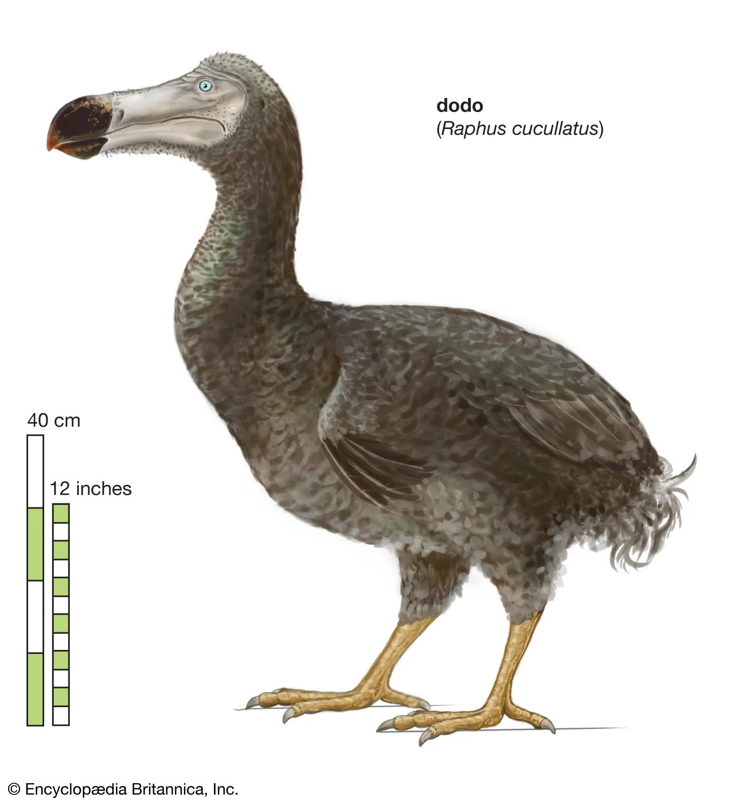

A brief history on dodo BirdsThe dodo (Raphus cucullatus) was a flightless bird that lived on the island of Mauritius in the Indian Ocean. It is believed to have gone extinct in the late 1600s, just a few decades after it was first discovered by Dutch sailors around 1598. Dodos evolved without natural predators and lost their ability to fly over time. When humans arrived, they brought invasive species like rats, pigs, and monkeys, which ate dodo eggs. Additionally, humans hunted dodos for food. The combination of hunting and introduced animals led to the bird's rapid extinction by around 1681. Though often portrayed as clumsy or foolish, dodos were simply unadapted to the threats brought by humans. Today, the dodo is a powerful symbol of human-driven extinction and the need for wildlife conservation. |
 |